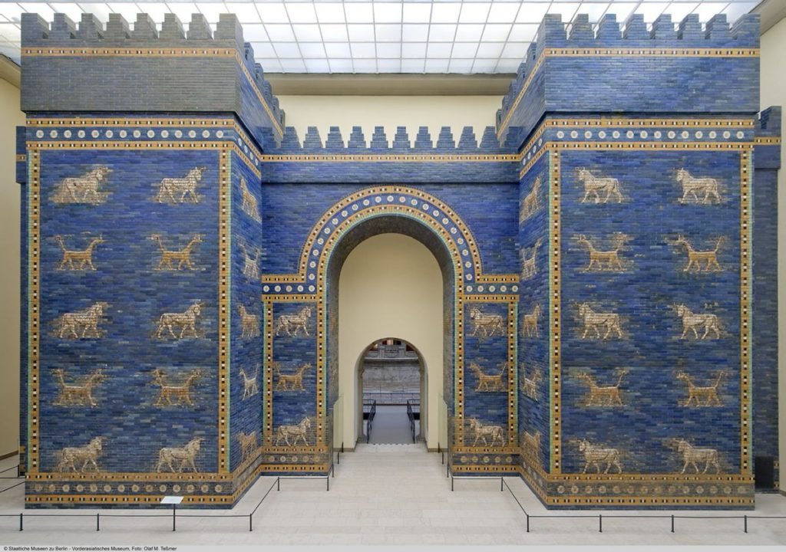
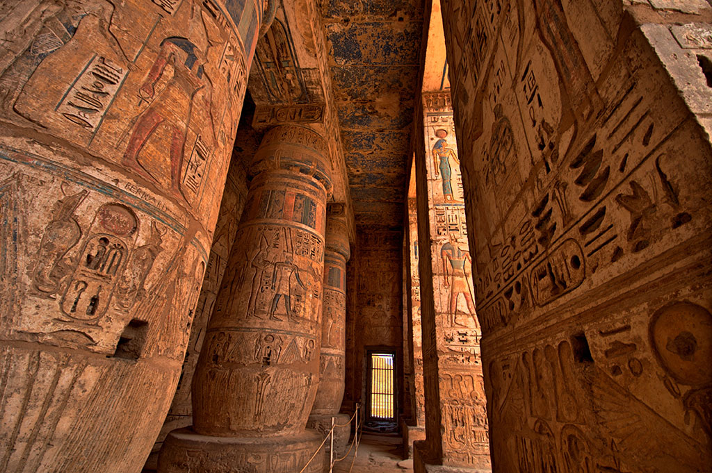

Welcome!
Our mission here is to provide information aswell as photographs of items found in the ruins of ancient civilizations.
By navigating with the tab right located at the right side of the screen, you will be able to explore lost and found ruins of the Old World!
I hope you enjoy my site, and am happy to answer any questions in my email listed at the bottom of the page.
 